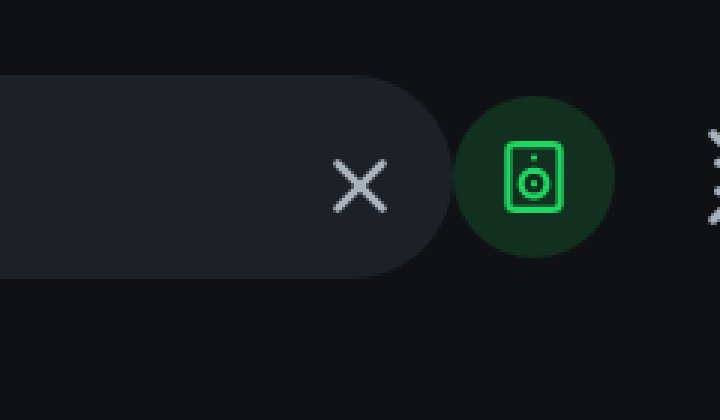
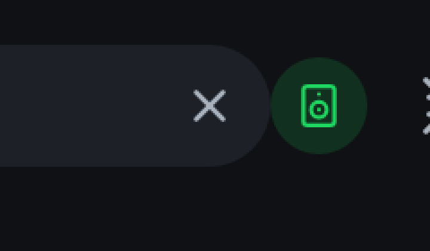
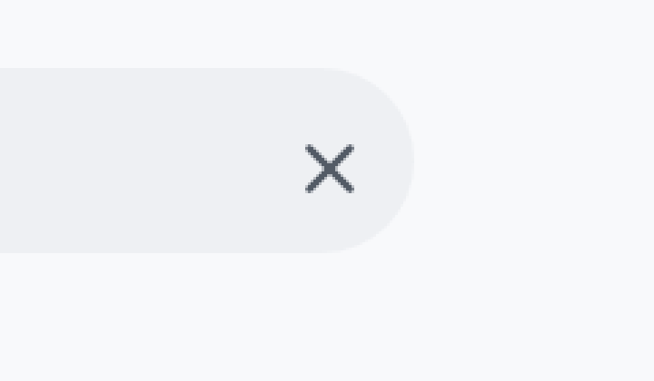
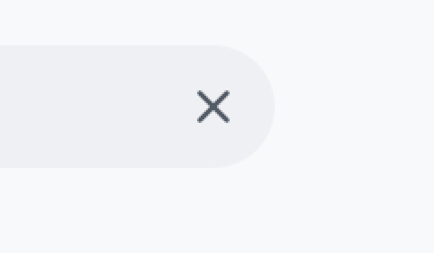
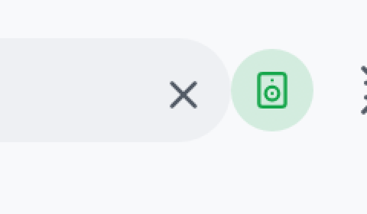
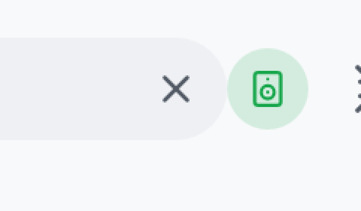

Baseline 12deee4 (before) vs candidate d0ff65c (after).
Captured with demo mode on macOS, window frame buffer at 2x. Same data, page, state, and
window size per theme and width; the only change between runs is the commit under test.
Normal window, dark theme (1280 × 800)
Clear button, 3x pixel zoomFull top bar strip
Narrow window, dark theme (760 × 600)
Clear button, 3x pixel zoom


Full top bar strip
Normal window, light theme (1280 × 800)
Clear button, 3x pixel zoom


Full top bar strip
Narrow window, light theme (760 × 600)
Clear button, 3x pixel zoom


Full top bar strip
What changed and why
The clear button's box was 24 points wide while theme::icon_button
allocates its 15-point glyph plus 12 points of padding. egui clamps a centered
layout that does not fit to the box's top edge, so the glyph landed 1.5 points
below the pill's midline (and equally right of center). The candidate sizes the
box to what the button actually allocates. Hit targets are unchanged; only the
glyph and the button rect move 1.5 points up-left to true center.
Checks
Regression test added: the_clear_button_sits_on_the_search_pill_midline (fails on baseline: 18.5 vs 17.0; passes on candidate)
fmt, clippy (default and all features), tests (default: 931 passed; all features: 954 passed), doc tests, rustdoc, metainfo and release-name regression scripts: pass locally
Launcher packaging script fails on macOS only (GNU install -D); CI runs it on Linux
Not covered locally: Linux/Windows builds; CI runs the suite on all three